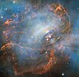

neutron-star

Definition: A neutron star is the collapsed core of a massive supergiant star, which had a total mass of between 10 and 25 solar masses, possibly more if the star was especially metal-rich. Except for black holes and some hypothetical objects (e.g. white holes and quark stars), neutron stars are the smallest and densest currently known class of stellar objects. Neutron stars have a radius on the order of 10 kilometres (6 mi) and a mass of about 1.4 solar masses. They result from the supernova explosion of a massive star, combined with gravitational collapse, that compresses the core past white dwarf star density to that of atomic nuclei.
Source: Wikipedia
Wikipedia Page (Something wrong with this association? Let us know.)
Wikidata Page (Something wrong with this association? Let us know.)
Occurs in: